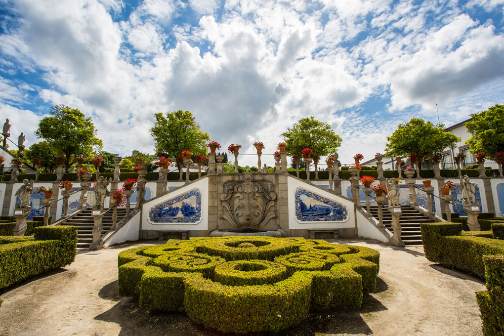

Castelo Branco
Cidade dos Templários
| Algumas informações | |
|---|---|
| População (2021) | 177912 |
| Área (km²) | 6675 |
| Província | Beira Baixa |
Cidade dos Templários
Castelo Branco é uma cidade portuguesa localizada na região central do país, conhecida como a "Cidade dos Templários" devido à presença da Ordem dos Templários na região durante a Idade Média. A cidade possui um patrimônio histórico e arquitetônico rico, com destaque para a Torre de Menagem, a Igreja de Santa Maria do Castelo e a antiga Judiaria. Além disso, a cidade é famosa pela sua gastronomia, com especial destaque para o queijo de Castelo Branco, produzido com leite de ovelha, e para as tradicionais "migas" e "maranhos". A região de Castelo Branco também oferece paisagens naturais deslumbrantes, como a Serra da Gardunha e o Vale do Zêzere.
Comidas
| Comida típica | Descrição |
|---|---|
| Queijo de Castelo Branco | Queijo de ovelha com DOP, textura cremosa e sabor suave |
| Migas | Prato feito com pão amanhecido, alho, azeite e carne de porco |
| Maranhos | Bola de carne de porco, pão e hortelã envolvida em uma membrana de gordura de porco e cozida em água |
| Tigelada | Sobremesa feita com ovos, açúcar, leite e canela |
Jardim do paço
O Jardim do Paço Episcopal é um dos pontos turísticos mais famosos de Castelo Branco, Portugal. Localizado no centro histórico da cidade, o jardim é conhecido pela sua beleza e tranquilidade. Foi construído no século XVIII em estilo barroco e possui diversas esculturas e fontes, além de uma vista panorâmica da cidade. O jardim é um lugar ideal para passear e relaxar, sendo um local muito apreciado pelos moradores e turistas que visitam Castelo Branco. Além disso, o Paço Episcopal, que faz parte do jardim, é uma construção do século XVI que já foi palco de importantes eventos históricos.